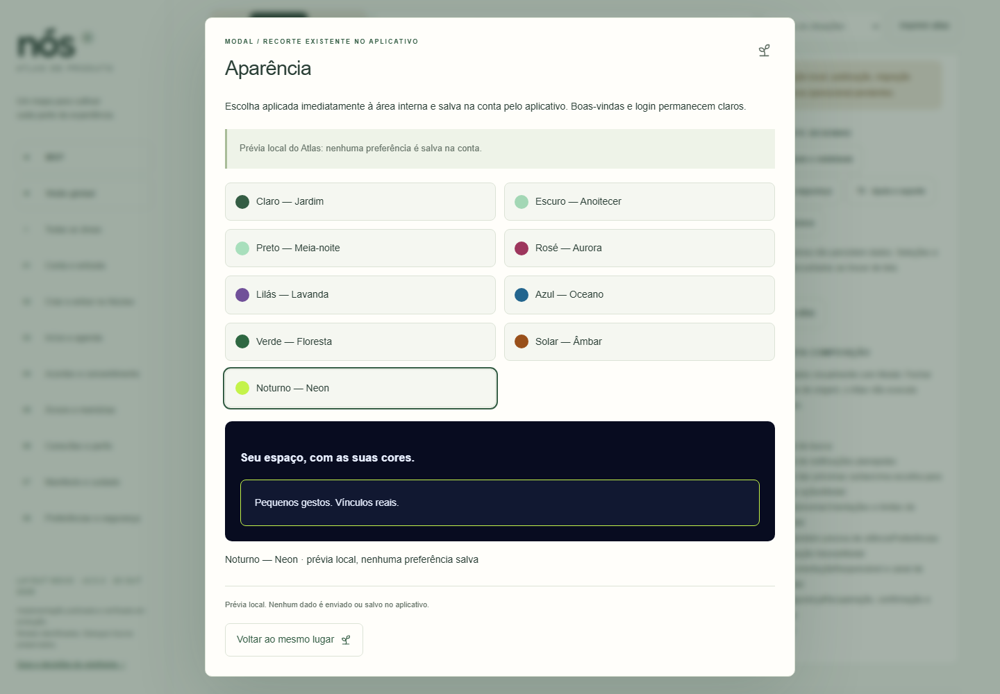
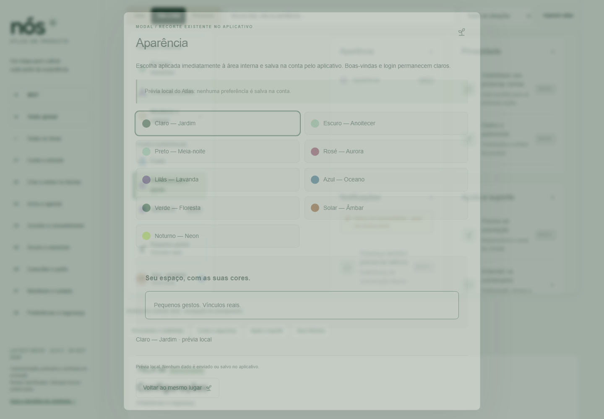

Aparência por conta — v3.2.1
23/10/2026 · Capturas reais de contas descartáveis locais. Cada tema aparece no seletor e na navegação, em computador e celular. Imagens de janela evitam o artefato Chromium fullPage com diálogo nativo. Nenhuma conta real foi utilizada.
Antes: sete temas. Depois: nove opções, com Solar/Âmbar e Noturno/Neon; Aparência segue os demais itens no desktop e no menu Mais. Ícones coloridos mantêm a paleta original em todos os temas. Boas-vindas e login continuam claros. Galeria histórica anterior · Contrato
Atlas vivo — prévia local
Nenhuma preferência é salva na conta nesta prévia.

